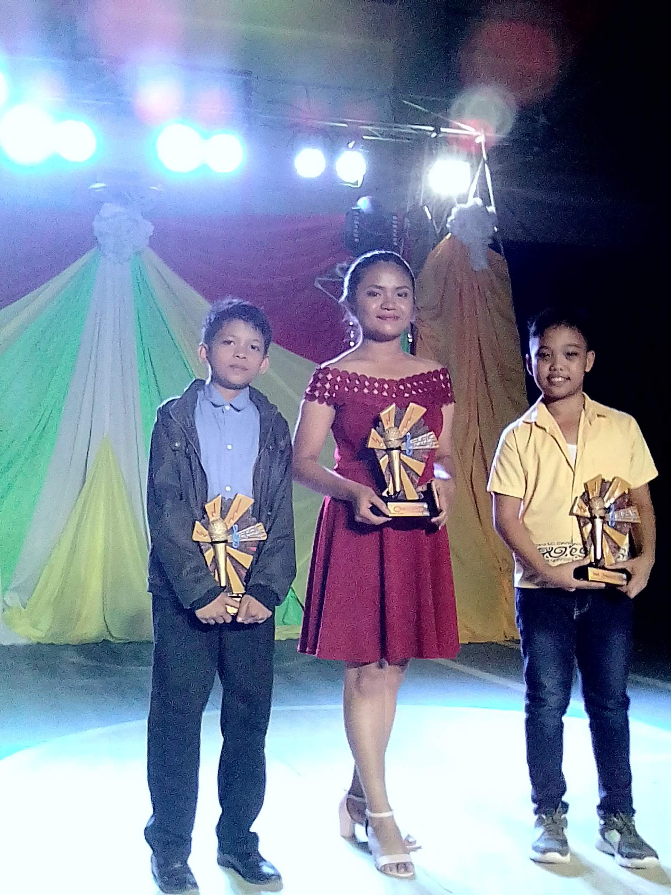
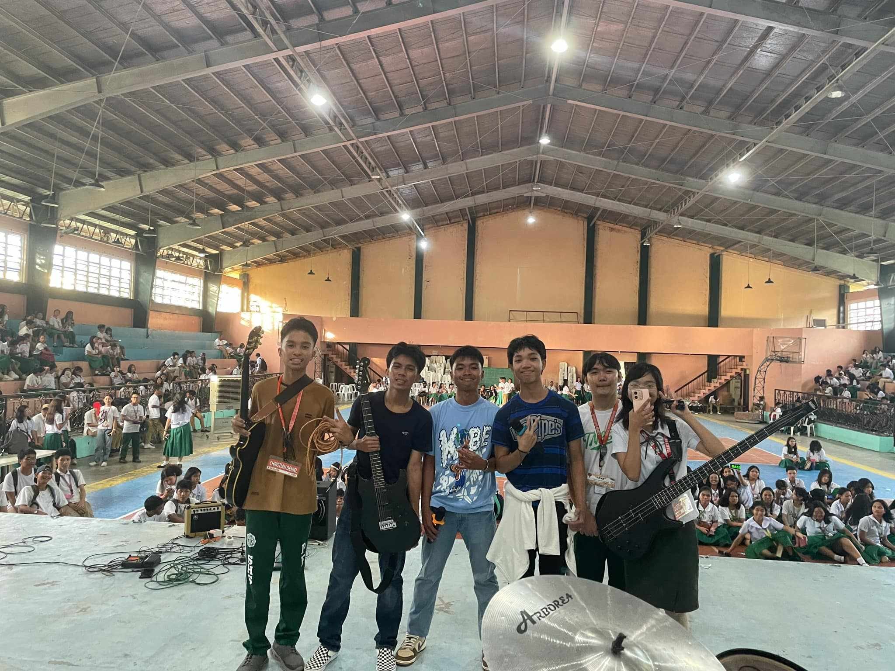
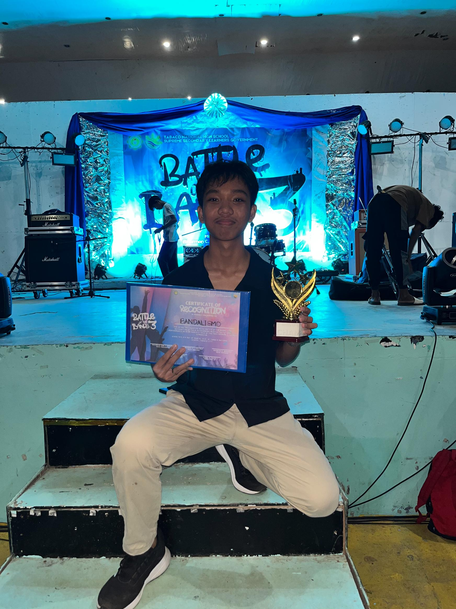

![]()
My Musical Journey Timeline

1. Family Roots & First Steps (Age 4)
At the age of 4, my parents taught me how to sing since my family loves music so much and they all love to sing. That early exposure built the foundation for my passion.

2. First Singing Contest & Radio Features (Age 5)
My first singing contest was way back when I was 5 years old—a competition in HOT FM radio station here in Tabaco City, and I won that competition! After that victory, radio stations always asked me to be a guest singer in their segments.
3. Elementary & High School Days
In this part of my life, I didn't focus as much on music. I still sang and practiced, but not as intensely as when I was a kid. I joined competitions occasionally, though it wasn't my main priority anymore. Even so, my passion stayed alive—I even won Battle of the Bands with my friends in 2025!

4. College Era: Rediscovery & Dreams
This part of my life is still new to me—new environment, new people, and new things to learn. But I want to rediscover something that isn't new to me: music. That's why I'm making songs and covering tracks on my social media accounts, hoping to someday become a full-fledged singer-songwriter—a title I've always dreamt of holding.
Musical Achievements

1st Place — HOT FM Singing Competition
Tabaco City (Won at 5 years old)

2nd Runner Up — Sta. Cruz 2019 Open Singing Competition

Intermissions & Live Gigs
Guest performances and local event appearances.

Champion — Battle of the Bands 2025
Lead Vocalist for Bandalismo
Original Songs & Works
Click on any title to listen to the song directly on BandLab:
The song centers on the lingering pain of discovering that the person you love harbors feelings for someone else. While there is a faint, vulnerable wish to be prioritized ("can't it be me first?"), it quickly dissolves into heartbreaking resignation: accepting that the partner has already chosen someone else, leaving the singer alone to grieve the broken promises.
The song follows someone using playful Tagalog lessons to charm their English-speaking crush. By translating everyday words into cute flirting, the singer promises to teach them to love the Filipino language—and hopefully fall for them too.
The song captures a moment of pure fascination and enchantment upon watching someone arrive. The singer describes how the person's presence instantly brightens the surroundings, comparing their beauty to blooming roses that move gracefully with the wind, ending with an eager invitation to come closer.
The song captures the desperate heartbreak of watching a relationship end, driven by a yearning to turn back time. The singer struggles to accept the breakup, begging for one more chance while painfully recognizing that the happiness they shared is gone and their ex is not coming back.
The song details a bittersweet back-and-forth between former lovers facing unresolved feelings. The girl tries to avoid him while secretly longing to turn back time, while the boy warns her to stay safe from the rush of his emotions—both questioning if loving each other again is wrong.